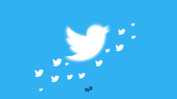

QUE ES TWITTER
|  |
es un servicio que permite que los grupos de amigos, familiares y compañeros de trabajo se comuniquen y estén en contacto a través de mensajes rápidos y frecuentes
Para estar informado: encuentra los hechos y las noticias más importantes del momento, de forma resumida.
Para compartir tus pasiones: escribe tu opinión sobre temas que te gusten, como los deportes, la música, la política y hasta las premiaciones de la temporada.
Para estar en contacto: sin importar si estás desde un computador o un dispositivo móvil, usa Twitter para comunicarte con personas de todo el mundo.
Para hacer publicidad: si tienes una empresa, envía mensajes masivos y anúnciale a tus clientes las novedades de tus productos y servicios.

|